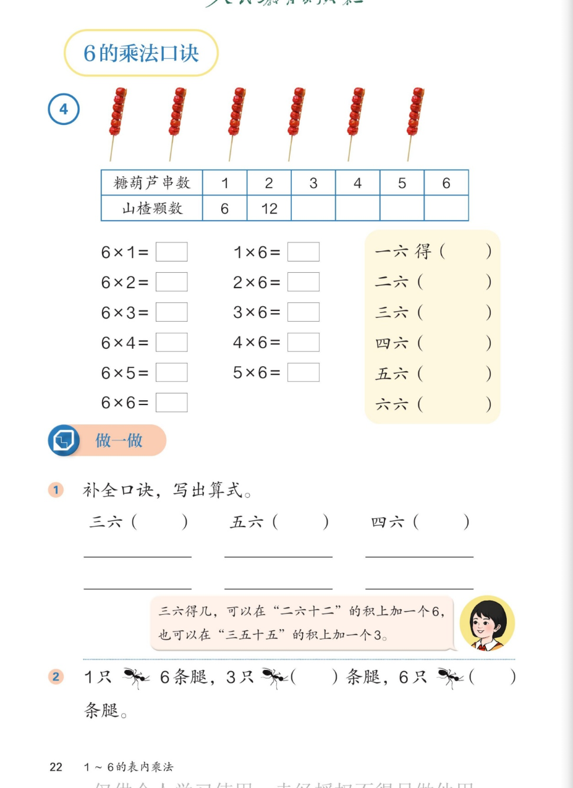

🍡 1~6的表内乘法 · 课本第 22 页 · 6 的乘法口诀
人教版《数学》二年级上册 · 有声图文带读 · 先想后看解析
题数
6
认知
2
强化
3
拓展
1
本页重点
6 的乘法口诀
🎧 分两步学：
① 解析教材图片
——纯声音读图，读到哪一块哪一块闪动提示；关键处先倒计时让你思考，再在图片下方给出解析并朗读。
② 分层提问练习
——六道分层题（认知 / 强化 / 拓展），先思考再展开解析、朗读参考答案；这一步不再回到图片。
也可以随时点任意一句话、图上任意一块单独听；点课本文字卡还会展开答案。
教材图片（点块听读，读到哪块哪块闪）

📖 人教版《数学》二年级上册 · 课本第 22 页 · 图片仅供个人学习，版权归人民教育出版社所有
🤔 想一想（点我可跳过）
课本的文字（点句子：听读 + 看答案）
主题图
6 串糖葫芦，每串有 6 个山楂。
看答案 ▾
读图：
每串糖葫芦
6 个
山楂，一共
6 串
。求总数就是求
6 个 6
是多少。
例4 表格
串数 1~6，山楂颗数：6、12、□、□、□、□
看答案 ▾
1 串
6 个；
2 串
12 个；每多 1 串就
多 6 个
：
3 串
18；
4 串
24；
5 串
30；
6 串
36。
算式与口诀
6×1=6 一六得六 …… 6×6=36 六六三十六
看答案 ▾
6×1=6
一六得六；
6×2=12
二六十二；
6×3=18
三六十八；
6×4=24
四六二十四；
6×5=30
五六三十；
6×6=36
六六三十六。
🌈 右边 1×6、2×6……是交换位置，
积不变
，用同一句口诀。
做一做 1
补全口诀，写出算式：三六（ ）五六（ ）四六（ ）
看答案 ▾
三六（十八）
：3×6=18、6×3=18；
五六（三十）
：5×6=30、6×5=30；
四六（二十四）
：4×6=24、6×4=24。
🌈 每句口诀（六六除外）都能写两道乘法算式
小女孩的提示
三六得几？可以在"二六十二"的积上加一个 6，也可以在"三五十五"的积上加一个 3。
看答案 ▾
想法一：
二六十二 → 12+6=
18
（3 个 6 比 2 个 6 多 1 个 6）；
想法二：
三五十五 → 15+3=
18
（3 个 6 = 3 个 5 再加 3 个 1）。
做一做 2
1 只蚂蚁 6 条腿，3 只蚂蚁（ ）条腿，6 只蚂蚁（ ）条腿。
看答案 ▾
3 只：
3×6=
18
（条），口诀三六十八；
6 只：
6×6=
36
（条），口诀六六三十六。
分层提问练习（先想后看解析）
🔢
认知
6 的乘法口诀共有几句？相邻两句相差几？
看解析
🤔 想一想
解析：
共 6 句
：一六得六 → 六六三十六
相邻差 6
：每多 1 串糖葫芦就多 6 个山楂
💡 差 6，正是"每次多 6"的规律
📋
认知
表格填空：3 串、4 串、5 串、6 串各有多少个山楂？
看解析
🤔 想一想
解析：
3 串
18
（三六十八）；4 串
24
（四六二十四）
5 串
30
（五六三十）；6 串
36
（六六三十六）
💡 也可以在 12 的基础上继续每次加 6
✏️
强化
补全口诀并各写两道算式：三六、五六、四六。
看解析
🤔 想一想
解析：
三六（
十八
）：3×6=18、6×3=18
五六（
三十
）：5×6=30、6×5=30
四六（
二十四
）：4×6=24、6×4=24
🧠
强化
忘了"三六得几"怎么办？说出两种想法。
看解析
🤔 想一想
解析：
想二六十二：
再加 1 个 6 → 12+6=
18
想三五十五：
再加 3 → 15+3=
18
💡 口诀之间是相通的，忘了一句可以推出来
🐜
强化
1 只蚂蚁 6 条腿，3 只、6 只蚂蚁各几条腿？
看解析
🤔 想一想
解析：
3 只：
3×6=
18
（条），三六十八
6 只：
6×6=
36
（条），六六三十六
💡 求"几只"就是求几个 6 相加
🌈
拓展
生活中哪里藏着"6 个 6 个"？举一个用 6 的口诀解决的例子。
看解析
🤔 想一想
解析（开放题）：
可以这样找：
1 盒酸奶 6 瓶，买 4 盒几瓶？4×6=
24
（瓶）；骰子 6 个面，2 个骰子共 2×6=
12
个面。
自然里也有：
雪花 6 个瓣、蜂巢六边形——"6"就藏在我们身边。
🌈 例子合理、能用 6 的口诀算，都算对
① 解析教材图片
② 分层提问练习
⏹ 停止
纯声音 + 高亮跟随 · 想好才出解析
← 返回导航